# LIBRERÍAS REQUERIDAS
library(factoextra) # Para el PCA
library(rlang) #
library(corrplot) # Figuras de elipses
library(ggplot2) # Figuras de dispersión
library(ggforce)
library(concaveman)
library(ggrepel)
library(vegan)Taller 9.1 Análisis de Componentes Principales - PCA
Datos fisicoquímicos de bahías
Ejemplo de bahías de Santa Marta
El siguiente ejemplo relaciona a 7 lugares en playas de de Santa Marta (observaciones) y en cada una de ellas se midieron 7 variables ambientales (descriptores). En este análisis de comonentes principales - PCA, se intenta saber cuál es la relación entre variables ambientales y cómo estas estructuran o caracterizan a las localidades estudiadas. La base de datos a trabajar es FQmarino.csv.
Ejercicio tomado de: Rodríguez-Barrios (2023) Enlace del libro
Enlace de los archivos del libro
Fuentes bibliográficas sobre el análisis de componentes principales:
PCA en factoextra - datanovia
Guía práctica sonre el PCA - datanovia
PCA para variables categóricas - R-bloggers
Capítulo PCA - Libro Numerical Ecology with R - Borcard et al. 2018
# Lectura de la base de datos "FQmarino"
datos <-read.csv2("FQmarino.csv",row.names=1) # file.choose()
View(datos)
str(datos)'data.frame': 7 obs. of 8 variables:
$ Grupo : chr "A" "A" "A" "B" ...
$ pH : num 8.42 8.49 8.51 8.56 8.61 ...
$ Cond : num 38 38.1 37.8 37.3 37.3 ...
$ Turbidez : num 1.364 0.545 1.273 1.273 0.636 ...
$ Temp : num 29.5 29.5 29.6 29.3 29.3 ...
$ Salinidad : num 2.42 2.43 2.42 2.38 2.38 ...
$ CapaFotica: num 19.7 22.1 22.1 10.8 9 ...
$ Oxigeno : num 0.097 0.147 0.331 0.17 0.098 0.098 0.098
Exploración Gráfica
# Elipses con colores
M <- cor(datos[,2:8]) # Matriz de Correlación (M)
round(head(M),2) pH Cond Turbidez Temp Salinidad CapaFotica Oxigeno
pH 1.00 -0.27 -0.04 -0.68 0.37 -0.77 -0.38
Cond -0.27 1.00 0.21 0.68 -0.19 0.61 0.12
Turbidez -0.04 0.21 1.00 0.03 -0.16 0.01 0.26
Temp -0.68 0.68 0.03 1.00 -0.03 0.97 0.59
Salinidad 0.37 -0.19 -0.16 -0.03 1.00 0.02 -0.15
CapaFotica -0.77 0.61 0.01 0.97 0.02 1.00 0.56La Figura 1 muestra la relación entre las variables, a partir de figuras de elipses.
x11() # Panel gráfico adicional
corrplot(M, method = "ellipse") # Figura de correlaciones con elipses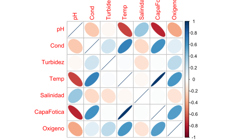
La Figura 2 muestra la relación entre las variables, a partir de figuras de elipses y coeficientes de correlación de Pearson.
X11()
corrplot.mixed(M, upper="ellipse") # Figura con coeficientes de correlación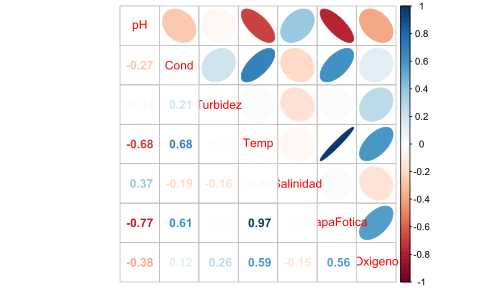
La Figura 3 otra forma de mostrar la relación entre las variables, a partir de figuras de elipses y coeficientes de correlación de Pearson.
x11()
corrplot(M, method = "circle", # Correlaciones con circulos
type = "lower", insig="blank", # Forma del panel
order = "AOE", diag = FALSE, # Ordenar por nivel de correlación
addCoef.col ="black", # Color de los coeficientes
number.cex = 0.8, # Tamaño del texto
col = COL2("RdYlBu", 200)) # Transparencia de los circulos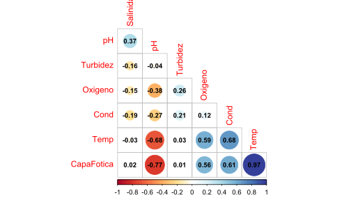
1) PCA con paquete factoextra
pca1 <- prcomp(datos[2:8],scale.=T)
summary(pca1)Importance of components:
PC1 PC2 PC3 PC4 PC5 PC6 PC7
Standard deviation 1.8455 1.1063 0.9920 0.9474 0.68079 0.1588 9.417e-16
Proportion of Variance 0.4865 0.1749 0.1406 0.1282 0.06621 0.0036 0.000e+00
Cumulative Proportion 0.4865 0.6614 0.8020 0.9302 0.99640 1.0000 1.000e+00
1.1) Contribución eje 1
La Figura 4 muestra las contribuciones de cada variable ambiental al pca.
x11(5,5)
fviz_contrib(pca1,choice="var",axes=1)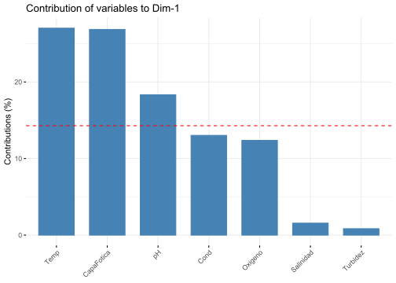
1.2) Ordenación de las localidades y variables ambientales
La Figura 5 muestra la ordenación de las localidades por cada Grupo de localidades.
x11()
fviz_pca_biplot(pca1, repel = TRUE, # repel quita el solapamiento en la figura.
col.var = "#2E9FDF", # Color de las variables
col.ind = "#696969", # Color de las observaciones
title = "PCA - Bilot")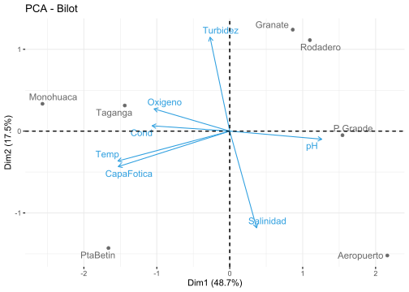
1.3) Elipses por cada grupo
La Figura 6 muestra la ordenación de las localidades por cada Grupo de localidades.
x11()
fviz_pca_ind(pca1, geom.ind = "point",
col.ind = datos$Grupo, # Colores por grupo - periodo
palette = c("#00AFBB", "#FC4E07"),
addEllipses = TRUE, ellipse.type = "confidence",
legend.title = "Groups")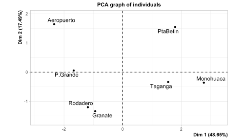
1.4) Figuras convexas por cada grupo
La Figura 7 muestra la ordenación de las localidades por cada Grupo de localidades.
x11()
fviz_pca_ind(pca1, geom.ind = "point",
col.ind = datos$Grupo, # Colores por periodo
palette = c("#00AFBB", "#E7B800"),
addEllipses = TRUE, ellipse.type = "convex",
legend.title = "Grupos",
title = "PCA - Plot")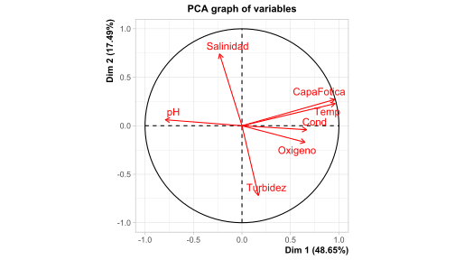
1.5) Escala de contribuciones de las observaciones y las variables
La Figura 8 muestra las contribuciones de cada variable ambiental al pca.
x11()
fviz_pca_biplot(pca1,
# Observaciones (Sitios)
geom.ind = "point",
fill.ind = datos$Grupo, col.ind = "black",
pointshape = 21, pointsize = 2,
palette = "jco",
addEllipses = TRUE,
# Variables ambientales
col.var = "contrib",
gradient.cols = "RdYlBu",
legend.title = list(fill = "Grupos", color = "Contrib",
alpha = "Contrib"))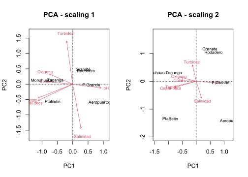
#—-
2) PCA con paquete ggplot2
Realización pca de del paquete “vegan” para gererar las coordenadas de los sitios y las variables ambientales.
# Nuevamente el pca, pero con la librería vegan.
pca2 <- rda(datos[2:8],scale=TRUE)
names(summary(pca2)) [1] "species" "sites" "call" "tot.chi" "unconst.chi"
[6] "cont" "scaling" "digits" "inertia" "method"
2.1 Coordenadas de los sitios y el factor “coord.sit”
coord.sit <- as.data.frame(summary(pca2)$"sites"[,1:2]) # Coordenadas de los sitios
coord.sit$sitio <- rownames(coord.sit) # Crear una columna con nombres de los sitios
coord.sit$grp <- datos$Grupo # Adicionar columna por Grupos
head(coord.sit) # vista resumida de las coordenadas de sitios PC1 PC2 sitio grp
Taganga -0.8103355 0.29431456 Taganga A
PtaBetin -0.9362688 -1.34295170 PtaBetin A
Monohuaca -1.4457313 0.31382105 Monohuaca A
Granate 0.4866006 1.16512115 Granate B
P.Grande 0.8704999 -0.04719406 P.Grande B
Rodadero 0.6186489 1.04517307 Rodadero B
2.2 Coordenadas de las variables ambientales “coord.amb”
coord.amb <- as.data.frame(summary(pca2)$"species"[,1:2]) # Dos primeros ejes
coord.amb$var.amb. <- rownames(coord.amb) # Insertar columna con nombres de las variables ambientales
head(coord.amb) PC1 PC2 var.amb.
pH 0.7600032 -0.05945541 pH
Cond -0.6408840 0.03919162 Cond
Turbidez -0.1626470 0.69131712 Turbidez
Temp -0.9230823 -0.21981458 Temp
Salinidad 0.2220233 -0.71203126 Salinidad
CapaFotica -0.9202592 -0.26095002 CapaFotica
**2.3 Ordenación de las localidades
La Figura 9 muestra la ordenación de las localidades.
x11() # Pánel gráfico
ggplot() +
# Ordenación de los Sitios
geom_text_repel(data = coord.sit,
aes(PC1,PC2,label=row.names(coord.sit)),
size=4)+
# Puntos de colores por cada grupo de localidades
geom_point(data = coord.sit,aes(PC1,PC2,colour=grp),size=4)+
# Ejes del plano cartesiano
geom_hline(yintercept=0, linetype=3, size=1) +
geom_vline(xintercept=0, linetype=3, size=1)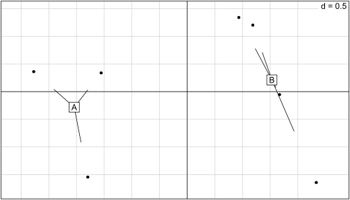
**2.4 Ordenación de las localidades y las variables ambientales
La Figura 10 muestra la ordenación de las localidades y las variables ambientales.
x11() # Pánel gráfico
ggplot() +
# Ordenación de los Sitios
geom_text_repel(data = coord.sit, # Base de datos de las localidades
aes(PC1,PC2,label=row.names(coord.sit)),
size=4)+
# Puntos de colores por cada grupo de localidades
geom_point(data = coord.sit,aes(PC1,PC2,colour=grp),size=4)+
# Ejes del plano cartesiano
geom_hline(yintercept=0, linetype=3, size=1) +
geom_vline(xintercept=0, linetype=3, size=1)+
# Variables ambientales
geom_segment(data = coord.amb, # Base de datos de las ambientales
# Edición de las flechas
aes(x = 0, y = 0, xend = PC1, yend = PC2), # Coordenadas de las flechas
arrow = arrow(angle=22.5, # Apertura de las flechas
length = unit(0.25,"cm"), # Tamaño de las puntas de las flechas
type = "closed"), # Forma de las puntas de las flechas
linetype=1, size=0.6,colour = "blue")+ # Tipo, color y expesor.
geom_text_repel(data = coord.amb, # Nombres de las variables ambientales
aes(PC1,PC2,label=var.amb.),
colour = "blue") 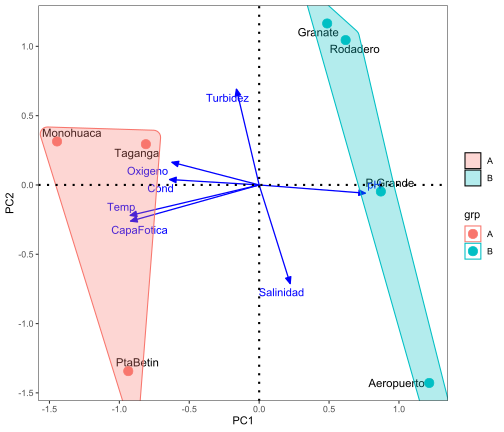
**2.4 Ordenación de las localidades, las variables ambientales y los grupos
La Figura 11 muestra la ordenación de las localidades, las variables ambientales y grupos.
x11() # Pánel gráfico
ggplot() +
# Ordenación de los Sitios
geom_text_repel(data = coord.sit, # Base de datos de las localidades
aes(PC1,PC2,label=row.names(coord.sit)),
size=4)+
# Puntos de colores por cada grupo de localidades
geom_point(data = coord.sit,aes(PC1,PC2,colour=grp),size=4)+
# Ejes del plano cartesiano
geom_hline(yintercept=0, linetype=3, size=1) +
geom_vline(xintercept=0, linetype=3, size=1)+
# Variables ambientales
geom_segment(data = coord.amb, # Base de datos de las ambientales
# Edición de las flechas
aes(x = 0, y = 0, xend = PC1, yend = PC2), # Coordenadas de las flechas
arrow = arrow(angle=22.5, # Apertura de las flechas
length = unit(0.25,"cm"), # Tamaño de las puntas de las flechas
type = "closed"), # Forma de las puntas de las flechas
linetype=1, size=0.6,colour = "blue")+ # Tipo, color y expesor.
geom_text_repel(data = coord.amb, # Nombres de las variables ambientales
aes(PC1,PC2,label=var.amb.),
colour = "blue") +
# Factor - grupos de localidades
geom_polygon(data=coord.sit, # Dataframe usado
aes(x=PC1,y=PC2, # Ejes del PCA
fill=grp, # Color de los bordes de las elipses
group=grp), # Color de los bordes de las elipses
alpha=0.30) # Transparencia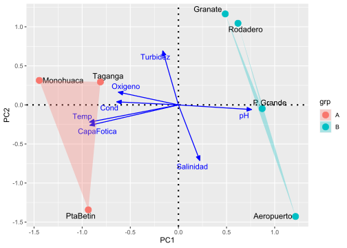
**2.5 Ordenación de las localidades, las variables ambientales y los grupos
Nota 1: Probar la edición de los grupos con la siguiente capa:
geom_mark_hull(data=coord.sit, # Dataframe usado
aes(x=PC1,y=PC2, # Ejes del PCA
fill=grp, # Relleno de las elipses
colour=grp), # Color de los bordes de las elipses
alpha=0.30) + # TransparenciaLa Figura 12 muestra la ordenación de las localidades, las variables ambientales y grupos.
x11() # Pánel gráfico
ggplot() +
# Ordenación de los Sitios
geom_text_repel(data = coord.sit, # Base de datos de las localidades
aes(PC1,PC2,label=row.names(coord.sit)),
size=4)+
# Puntos de colores por cada grupo de localidades
geom_point(data = coord.sit,aes(PC1,PC2,colour=grp),size=4)+
# Ejes del plano cartesiano
geom_hline(yintercept=0, linetype=3, size=1) +
geom_vline(xintercept=0, linetype=3, size=1)+
# Variables ambientales
geom_segment(data = coord.amb, # Base de datos de las ambientales
# Edición de las flechas
aes(x = 0, y = 0, xend = PC1, yend = PC2), # Coordenadas de las flechas
arrow = arrow(angle=22.5, # Apertura de las flechas
length = unit(0.25,"cm"), # Tamaño de las puntas de las flechas
type = "closed"), # Forma de las puntas de las flechas
linetype=1, size=0.6,colour = "blue")+ # Tipo, color y expesor.
geom_text_repel(data = coord.amb, # Nombres de las variables ambientales
aes(PC1,PC2,label=var.amb.),
colour = "blue") +
# Factor - grupos de localidades
geom_mark_hull(data=coord.sit, # Dataframe usado
aes(x=PC1,y=PC2, # Ejes del PCA
fill=grp, # Relleno de las elipses
colour=grp), # Color de los bordes de las elipses
alpha=0.30) # Transparencia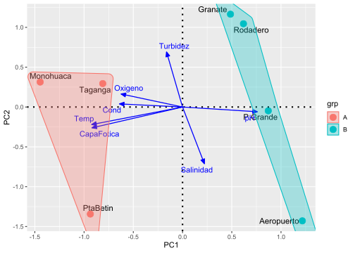
Nota 2: Probar la edición de los grupos con la siguiente capa:
geom_mark_ellipse(data=coord.sit, # Dataframe usado
aes(x=PC1, y=PC2, # Ejes del PCA
colour=grp, # Color de los bordes de las elipses
colour=grp), # Color de los bordes de las elipses
expand=0, size=0.2) La Figura 13 muestra la ordenación de las localidades, las variables ambientales y grupos.
x11() # Pánel gráfico
ggplot() +
# Ordenación de los Sitios
geom_text_repel(data = coord.sit, # Base de datos de las localidades
aes(PC1,PC2,label=row.names(coord.sit)),
size=4)+
# Puntos de colores por cada grupo de localidades
geom_point(data = coord.sit,aes(PC1,PC2,colour=grp),size=4)+
# Ejes del plano cartesiano
geom_hline(yintercept=0, linetype=3, size=1) +
geom_vline(xintercept=0, linetype=3, size=1)+
# Variables ambientales
geom_segment(data = coord.amb, # Base de datos de las ambientales
# Edición de las flechas
aes(x = 0, y = 0, xend = PC1, yend = PC2), # Coordenadas de las flechas
arrow = arrow(angle=22.5, # Apertura de las flechas
length = unit(0.25,"cm"), # Tamaño de las puntas de las flechas
type = "closed"), # Forma de las puntas de las flechas
linetype=1, size=0.6,colour = "blue")+ # Tipo, color y expesor.
geom_text_repel(data = coord.amb, # Nombres de las variables ambientales
aes(PC1,PC2,label=var.amb.),
colour = "blue") +
# Factor - grupos de localidades
geom_mark_ellipse(data=coord.sit, # Dataframe usado
aes(x=PC1, y=PC2, # Ejes del PCA
colour=grp, # Color de los bordes de las elipses
fill=grp), # Color de los bordes de las elipses
expand=0, size=0.2) 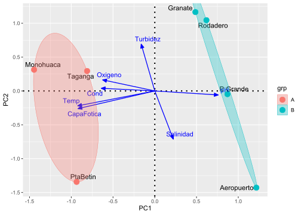
Nota 3: Insertar el siguiente tema:
# Plantilla de la figura
theme_bw()+
theme(panel.grid=element_blank())La Figura 14 muestra la ordenación de las localidades, las variables ambientales y grupos.
x11() # Pánel gráfico
ggplot() +
# Ordenación de los Sitios
geom_text_repel(data = coord.sit, # Base de datos de las localidades
aes(PC1,PC2,label=row.names(coord.sit)),
size=4)+
# Puntos de colores por cada grupo de localidades
geom_point(data = coord.sit,aes(PC1,PC2,colour=grp),size=4)+
# Ejes del plano cartesiano
geom_hline(yintercept=0, linetype=3, size=1) +
geom_vline(xintercept=0, linetype=3, size=1)+
# Variables ambientales
geom_segment(data = coord.amb, # Base de datos de las ambientales
# Edición de las flechas
aes(x = 0, y = 0, xend = PC1, yend = PC2), # Coordenadas de las flechas
arrow = arrow(angle=22.5, # Apertura de las flechas
length = unit(0.25,"cm"), # Tamaño de las puntas de las flechas
type = "closed"), # Forma de las puntas de las flechas
linetype=1, size=0.6,colour = "blue")+ # Tipo, color y expesor.
geom_text_repel(data = coord.amb, # Nombres de las variables ambientales
aes(PC1,PC2,label=var.amb.),
colour = "blue") +
# Factor - grupos de localidades
geom_mark_ellipse(data=coord.sit, # Dataframe usado
aes(x=PC1, y=PC2, # Ejes del PCA
colour=grp, # Color de los bordes de las elipses
fill=grp), # Color de los bordes de las elipses
expand=0, size=0.2) +
# Plantilla de la figura
theme_bw()+
theme(panel.grid=element_blank())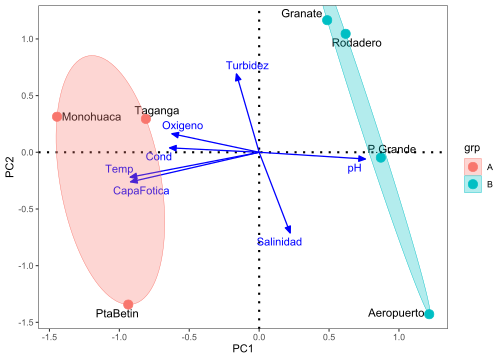